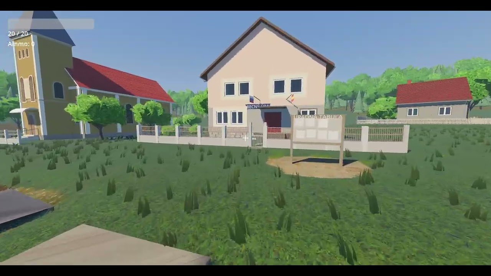

Prvý zápis. Na hre robím od leta, väčšinou po večeroch. Sem budem písať, čo som spravil, čo nefunguje a čo ma pri tom serie. Poriadne sa to ešte hrať nedá. Po dedine sa už prejdeš, vojdeš do domu aj do krčmy, s pár ľuďmi prehodíš slovo a môžeš sa aj pobiť, ale celý deň od rána do večera tam zatiaľ nie je.
The first entry. I've been working on the game since summer, mostly in the evenings. This is where I'll write about what I've done, what doesn't work and what drives me nuts along the way. You can't really play it yet. You can walk around the village, go into the house and the pub, have a word with a few people and get into a fight, but there's no full day from morning to evening yet.
O hre
GENŠ je first-person hra z prostredia slovenskej dediny na prelome tisícročí. Cieľom hry je sprostredkovať krutú a niekedy aj absurdnú realitu každodenného života v malej dedinke na Gemeri. Hrá sa po dňoch.
About the game
GENŠ is a first-person game set in a Slovak village around the turn of the millennium. Its goal is to convey the harsh, and sometimes absurd, reality of everyday life in a small village in the Gemer region. It's played day by day.

Prechádzka po dedine (playtest 2)A walk through the village (playtest 2)
Ako som začal
V lete som začal úplne od základov: chodenie, kamera, obušok, pár nepriateľov, čo po tebe idú, a jeden quest. Potom som pridal loptu, aby sa bolo čím hádzať. Prvú postavu som mal z Meshy AI, lenže animácie sa na nej sekali, tak som ju po pár dňoch zahodil. Kameru som prerobil z tretej osoby na prvú, lebo na dedine chceš vidieť to, čo vidí človek, a nie svoj chrbát.
Lenže bez prostredia to bola len testovacia aréna. V októbri som sa teda pustil do domu, kde hráč býva. Klasická socialistická kocka, akých je na Slovensku plno. Robil som ju po kúskoch: najprv múry a strecha, potom vchod, okná, dvere, čo sa dajú otvoriť, schody, garáž a nakoniec izby a nábytok.
How I started
In the summer I started with the basics: movement, camera, a baton, a few enemies that come at you, and one quest. Then I added a ball so there was something to throw. The first character came from Meshy AI, but its animations kept stuttering, so after a few days I threw it out. I switched the camera from third person to first, because in a village you want to see what a person sees, not your own back.
But without a place it was just a test arena. So in October I started on the player's house. A classic socialist cube house, the kind there are plenty of in Slovakia. I built it bit by bit: walls and roof first, then the entrance, windows, doors you can open, stairs, the garage, and finally rooms and furniture.


Ako to funguje
Skoro nič v hre neukladám ručne v editore. Všetko postaví skript podľa dát:
- Domy robí generátor. Zadám rozmery, strechu, okná a podmurovku a vypadne z toho dom aj s interiérom, alebo len kulisa do diaľky.
- Celá dedina je v jednom súbore: kade idú cesty, kde tečie potok, aký dom a plot je na ktorom pozemku. Spustím jeden príkaz a ten postaví terén, cesty s obrubníkmi a jarkami, priepusty, záhrady, kôlne aj stromy. Potom ešte test prejde všetky cesty a skontroluje, či sa dá všade prejsť a či sa domy niekde neprekrývajú.
- Postavy robím v MPFB2, čo je doplnok do Blendera. Každá má krátky recept: vek, postava, oblečenie. Animácie majú všetky spoločné, takže každá vie chodiť a sadnúť si na lavičku aj na gauč.
- Questy a rozhovory sú tiež v súboroch, nie v kóde. Hlasy sa k nim generujú zvlášť.
Väčšinu kódu nepíšem sám. Čo treba spraviť, si rozpíšem s Claudom, kód potom väčšinou napíše Gemini a ja to kontrolujem priamo v hre. Na to som si do hry spravil jednoduchý nástroj: keď sa prechádzam a niečo sa mi nepáči, stlačím F12, napíšem poznámku a uloží sa k nej screenshot aj presné miesto, kde som stál. Po prvej prechádzke som mal 22 poznámok a teraz ich postupne opravujem.
How it works
Almost nothing in the game is placed by hand in the editor. Scripts build everything from data:
- Houses come from a generator. I give it the size, roof, windows and plinth, and out comes a house with an interior, or just a backdrop for the distance.
- The whole village is one file: where the roads go, where the creek runs, which house and fence sits on which plot. One command builds the terrain, roads with kerbs and ditches, culverts, gardens, sheds and trees. Then a test walks every road and checks you can get through everywhere and that no houses overlap.
- Characters are made in MPFB2, a Blender add-on. Each one has a short recipe: age, build, clothes. They all share the same animations, so every one of them can walk and sit on a bench or a sofa.
- Quests and dialogue live in files too, not in code. Voices are generated for them separately.
I don't write most of the code myself. I break down what needs doing with Claude, Gemini usually writes the code, and I check it directly in the game. For that I made a simple in-game tool: when I'm walking around and something looks wrong, I press F12, type a note, and it saves a screenshot with the exact spot where I stood. The first walk left me with 22 notes, and I'm fixing them one by one.


Čo som sa zatiaľ naučil
- Po malých kúskoch. Dom som robil na dvanásťkrát a po každom kroku som si ho pozrel. Vždy, keď som chcel všetko naraz, niečo sa pokazilo.
- Najprv na jednom dome. Raz som dal naraz na všetkých 58 pozemkov schránky, čísla domov a lavičky. Polovica schránok visela vo vzduchu, tak som to celé vrátil. Odvtedy najprv doladím jeden dom aj s dvorom a až keď sa mi páči, dám to aj na ostatné.
- Radšej dáta ako kód. Keď je celá dedina v jednom súbore, posunúť bufet o štyri metre znamená prepísať dve čísla, nie hodinu klikať v editore.
- Kým to nevidím, neverím, že je to hotové. Testy môžu prejsť a prechod pre chodcov bude aj tak otočený naopak. Takže každú zmenu si pozriem na obrázku z toho istého miesta.
- AI treba dávať jasné úlohy. Keď dostane niečo veľké a všeobecné, vie sa s tým hodinu babrať, prepáliť desiatky miliónov tokenov a výsledok nikde. Krátka a presne opísaná úloha funguje omnoho lepšie.
What I've learned so far
- Small bits. The house took twelve goes and I looked at it after every step. Whenever I wanted everything at once, something broke.
- One house first. Once I put mailboxes, house numbers and benches on all 58 plots at once. Half the mailboxes floated in the air, so I reverted the lot. Since then I polish one house and yard first, and only when I like it do I roll it out to the rest.
- Data over code. With the whole village in one file, moving the snack bar four metres means changing two numbers, not an hour of clicking in the editor.
- Not done until I've seen it. Tests can pass and the zebra crossing will still be turned the wrong way. So every change gets checked on a picture from the same spot.
- AI needs clear tasks. Give it something big and vague and it can mess around for an hour, burn tens of millions of tokens and show nothing for it. A short, precisely described task works much better.
Čo ma serie
- Cesty. Každý kus cesty, chodníka a vjazdu je zatiaľ samostatný, takže križovatky vyzerajú, ako keby niekto na seba pohádzal trojuholníky a štvorce. Toto idem opravovať ako prvé.
- Blbosti, ktoré test nevidí. Prechod pre chodcov naopak, nápis väčší ako tabuľa, štamgasti, čo sedia napoly v stene susedovho domu. A test povie, že je všetko v poriadku.
- Animácie. Prenášať animácie z jednej kostry na druhú je za trest, preto majú všetky postavy rovnakú kostru a jednu spoločnú sadu animácií.
- Godot. Mám ho nastavený tak, že aj obyčajné varovanie berie ako chybu. Je to tak správne, ale stačí jedna zabudnutá premenná bez typu a nejde nič.
- Drbanie. Niekedy sa s niečím môžem dlho drbať, ale nakoniec to aj tak vyzerá na prd.
- Limity. AI nástroje majú kvóty a niektoré dni sa proste viac nestihne.
What drives me nuts
- Roads. Every piece of road, sidewalk and driveway is still separate, so junctions look like someone threw triangles and squares on top of each other. That's the first thing I'm fixing.
- Stupid little things a test can't see. A zebra crossing the wrong way round, a sign bigger than its board, regulars sitting halfway inside the neighbour's wall. And the test says everything is fine.
- Animations. Moving animations from one skeleton to another is a punishment, so all characters share one skeleton and one set of animations.
- Godot. I've set it up so that even a plain warning counts as an error. That's the right way, but one forgotten untyped variable and nothing works.
- Fiddling. Sometimes I can mess around with something for ages and it still ends up looking like crap.
- Limits. AI tools have quotas, and some days you just can't get more done.

Čo ďalej
Najprv opravím, čo som našiel pri prechádzke: aby cesty a chodníky na seba normálne nadväzovali a aby cesta na oboch koncoch dediny pokračovala do lesa a nekončila v prázdne. Potom chcem jeden dvor dotiahnuť do detailov a podľa neho postupne aj ostatné. Fyzika a samotné hranie po dňoch prídu, až bude dedina hotová.
What's next
First I'll fix what I found on the walk: roads and sidewalks that join up properly, and roads at both ends of the village that carry on into the forest instead of ending in nothing. Then I want to finish one yard in detail and use it as a template for the rest. Physics and the actual day-by-day play come once the village is done.